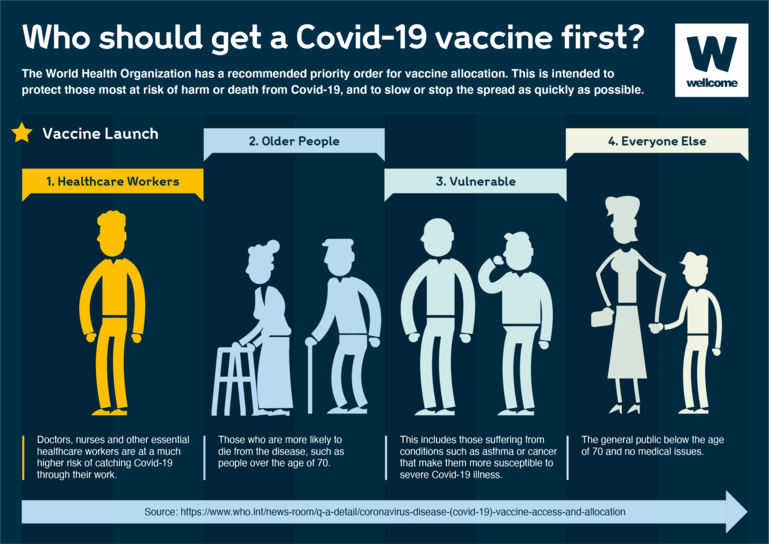
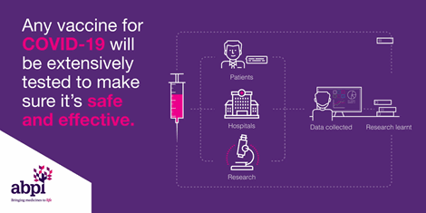
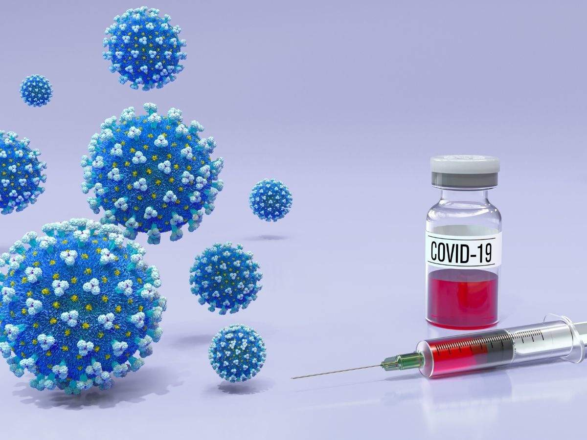

STOP COVID
Who should get vaccine ?
The COVID-19 vaccines are safe for most people 18 years and older, including those with pre-existing conditions of any kind, including auto-immune disorders. These conditions include: hypertension, diabetes, asthma, pulmonary, liver and kidney disease, as well as chronic infections that are stable and controlled. If supplies are limited in your area, discuss your situation with your care provider if you: Have a compromised immune system Are pregnant or nursing your baby Have a history of severe allergies, particularly to a vaccine (or any of the ingredients in the vaccine) Are severely frail
What are the benefits of getting vaccinated ?
The COVID-19 vaccines produce protection against the disease, as a result of developing an immune response to the SARS-Cov-2 virus. Developing immunity through vaccination means there is a reduced risk of developing the illness and its consequences. This immunity helps you fight the virus if exposed. Getting vaccinated may also protect people around you, because if you are protected from getting infected and from disease, you are less likely to infect someone else. This is particularly important to protect people at increased risk for severe illness from C
What impact do the new variants of the COVID-19 virus have on vaccines?
The COVID-19 vaccines that are currently in development or have been approved are expected to provide at least some protection against new virus variants because these vaccines elicit a broad immune response involving a range of antibodies and cells. Therefore, changes or mutations in the virus should not make vaccines completely ineffective. In the event that any of these vaccines prove to be less effective against one or more variants, it will be possible to change the composition of the vaccines to protect against these variants. Data continues to be collected and analysed on new variants of the COVID-19 virus. WHO is working with researchers, health officials and scientists to understand how these variants affect the virus’s behaviour, including their impact on the effectiveness of vaccines, if any. See WHO’s Disease Outbreak News to get up-to-date information on the impact of COVID-19 virus variants on the effectiveness of the different vaccines. This is an area where the evidence remains preliminary and is developing quickly. While we are learning more, we need to do everything possible to stop the spread of the virus in order to prevent mutations that may reduce the efficacy of existing vaccines. In addition, manufacturers and the programmes using the vaccines may have to adjust to the evolution of the COVID-19 virus: for example, vaccines may need to incorporate more than one strain when in development, booster shots may be required, and other vaccine changes may be needed. Trials must also be designed and maintained to allow any changes in efficacy to be assessed, and must be of sufficient scale and diversity to enable clear interpretation of results. Studies of the impact of vaccines as they are deployed are also essential in order to understand their impact.
What is WHO doing to monitor and understand the impact of virus variants on the efficacy of COVID-19 vaccines?
WHO has been tracking mutations and variants since the start of the COVID-19 outbreak. Our global SARS-CoV-2 laboratory network includes a dedicated Virus Evolution Working Group, which aims to detect new changes quickly and assess their possible impact. Research groups have carried out genomic sequencing of the COVID-19 virus and shared these sequences on public databases, including GISAID. This global collaboration allows scientists to better track how the virus is changing. WHO recommends that all countries increase the sequencing of the COVID-19 virus where possible and share data to help one another monitor and respond to the evolving pandemic. WHO has also established a SARS-CoV-2 Risk Monitoring and Evaluation Framework to identify, monitor and assess variants of concern. It will involve components like surveillance, research on variants of concern, and evaluation of the impact on diagnostics, therapeutics and vaccines. The framework will serve as a guide for manufacturers and countries on changes that may be needed for COVID-19 vaccines.